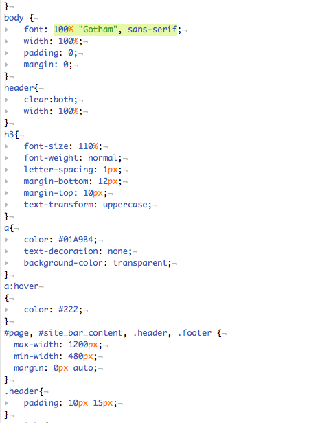
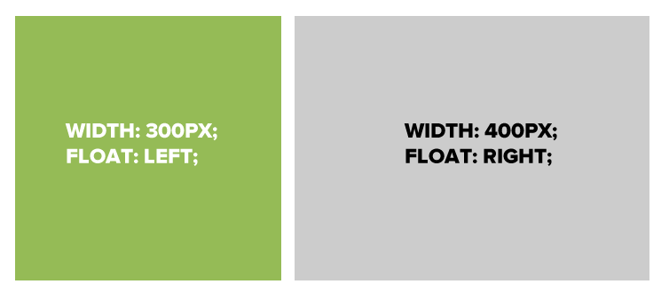

Introdução HTML e CSS
Anatomia de um website
Um website é uma forma de apresentar seu conteúdo para o mundo, usando HTML e CSS para mostrar o conteúdo e fazer parecer BOM.
CSS: O que é?
CSS = Cascading Style Sheets
CSS é uma "folha de estilo" que permite que você configure os elementos na sua página.
CSS trabalha junto com HTML, mas não é HTML em si.
CSS: O que ele pode fazer?
Textos coloridos, posicionamento, tamanho

CSS: Como ele se parece?
Regras de CSS

Regras de CSS
selector {
property: value;
}
Um bloco de CSS é uma regra.
A regra começa com um "selector".
Ele define propriedades e valores.
O par propriedade-valor é uma declaração.
Sintaxe CSS
Declarações: Propriedade e valor do estilo que você planeja usar em um elemento de HTML.
A declaração termina com um ponto e vírgula
As declarações são agrupadas por chaves.
selector {
property: value;
property: value;
property: value;
}
Vinculando o CSS ao HTML
3 formas
"Inline"
"Embedded"
"External"
Vinculando o CSS ao HTML: Inline
<p style="color:red">Some text.</p>
Usa o atributo "style" do HTML.
Para projetos grandes fica mais difícil de usar
Não é o preferencial.
Vinculando o CSS ao HTML: Embedded
<head>
<style type="text/css">
p {
color: blue;
font-size: 12px;
}
</style>
</head>
Dentro do elemento <head>
Usa a tag <style> .
Só pode ser usado em um arquivo html
Vinculando o CSS ao HTML: External
<head>
<link rel="stylesheet" type="text/css" href="style.css">
</head>
Compartilha recursos com várias páginas.
Reduz o tamanho do arquivo e largura de banda
Fácil manutenção em projetos grandes.
Usar este modo, preferencialmente!
Selector: Elemento
p {
property: value;
}
Seleciona todos os parágrafos.
img {
property: value;
}
Seleciona todas as imagens.
IDs X Classes
O símbolo "#" indica "isto é um ID."
O "." é como o CC identifica "este é o nome da classe."
Selector: ID
#footer {
property: value;
}
Seleciona todos elementos com id "footer".
<p id="footer">Copyright 2011</p>
HTML associado.
Selector: Classe
.warning {
color: red;
}
Seleciona todos os elementos identificados com a classe "warning".
<p class="warning">Corra!</p>
HTML associado.
Selector: Posição
p em {
color: yellow;
}
Seleciona todos os elementos que estão dentro de um parágrafo
<p>Isto é <em>importante.</em></p>
HTML associado.
Propriedades
Cada propriedade pode ter um valor ou mais (separados por vírgula).
p{
color: white;
background-color: red;
font-family: Arial, sans-serif;
}
Propriedades CSS
Muitas das properiedades CSS são auto-explicativas:
- background-color
- font-family
- font-size
- color
- width
- height
Padding
Espaçamento entre a borda e o conteúdo

Padding
Espaçamento entre a borda e o conteúdo

Padding
15 pixels em todos os lados
padding: 15px;
padding-top: 10px;
padding: 10px 5px 3px 5px;
Padding
4 valores
padding: top right bottom left;
Dois valores
padding: top/bottom right/left;
Um valor
padding: all;
Padding
padding: 10px 20px 30px 40px;

Border
Contorno em volta de um box

Border
Borda sólida vermelha
border: 1px solid #ff0000;
Linha pontilhada preta no topo
border-top: 4px dotted #000000;
Dois tipos diferentes de linha
border-top: 1px solid #ff0000;
border-bottom: 4px dotted #000000;
Border - Outras propriedades
border-width: 10px;
border-style: dashed;
border-color: #666666;
Você pode determinar as propriedades separadamente ou todas de uma vez.
Margin
Área transparente que separa um box de outros elementos.

Margin
15 pixels em todos os lados
margin: 15px;
10 no topo, 5 a direita, 3 abaixo, 5 a esquerda
margin: 10px 5px 3px 5px;
10 pixels no topo
margin-top: 10px;
Auto Margin
Se uma margem é configurada como "auto", ela vai assumir o maior espaço possível
CENTERED
margin: auto;
width: 300px;
FLUSH-RIGHT
margin-left: auto;
margin-right: 5px;
width: 300px;
Propriedade: Width
Configura a largura de um elemento.
Não inclui padding ou borders.
Propriedade: Height
Configura a altura de um elemento.
Não inclui padding ou borders.
CSS Reset
Os browsers possuem um padrão para interpretar as tags
Para garantir que o CSS valha, é prudente fazer um reset de CSS
CSS Reset
* {
margin:0;
padding:0;
list-style:none;
vertical-align:baseline;
}
Float: Exemplo

Float
.float{
float:left;
width:200px;
background:yellow;
}
Eu gosto de ficar, aqui, do lado esquerdo.
Usando o float para colocar elementos lado a lado
Se você tem dois elementos, você precisa configurar para que um fique a esquerda e o outro fique a direita.
